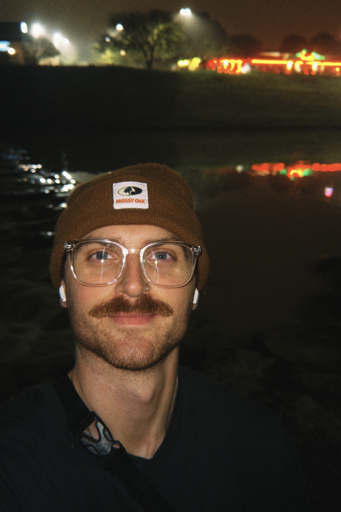

Tired & Happy
As the words above say, I am quite often very tired, and for some reason, always hungry. Despite those things I am typically a very happy person who is excited to face each day with a sense of optimism. I believe we get what we give and we can truly make our lives better with a little gratitude.
"There is nothing noble in being superior to your fellow man; true nobility is being superior to your former self."